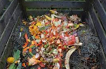
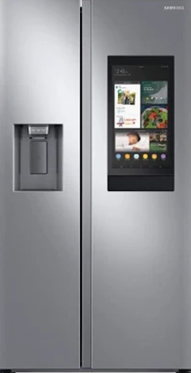

Final Project - Smarter Fridge Upgrade Module

Over the course of senior design we had to come up with an idea for
what we would like to do for our capstone project. We decided that food
waste is much to prevalent in our society, and that there should be an
affordable way to easily keep track of all your food items.

Currently it is much too expensive for people to update their perfectly
working appliances to fancy new smart fridges, so we are designing an
upgrade module that can turn any old fridge into a smarter fridge!
It will allow users to keep track of the inventory of their fridge,
as well as the expiration dates of the items. The user then would
be able to access this information from either a front panel or
remotely from an internet connected device to always be able to
know what exactly is in their fridge, and help stop food waste
in it’s tracks!